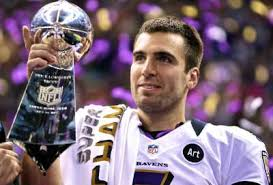
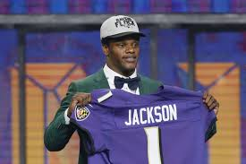
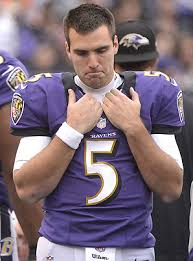
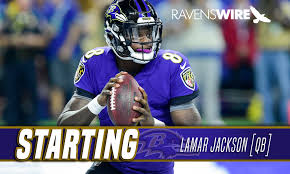

The End of an Era
- Joe Flacco has been the starting Quarterback for the Baltimore Ravens since 2008.
- In 2012, he won the Super Bowl, along with the Super Bowl MVP award.

- The Ravens have missed the playoffs each of the last 4 seasons, which is why general manager, Ozzie Newsome elected to draft Lamar Jackson in the first round of the 2018 draft.

- This is Newsome's last year as the general manager and many believe this to be a "legacy pick".

- Now in week 11 of the NFL season, Lamar Jackson got his first career NFL start with Flacco sidelined with an injured hip

- Lamar went on to lead the Ravens to a victory over the Bengals, which brings up the question of when Lamar Jackson will fully take the reigns of the offense from Joe Flacco